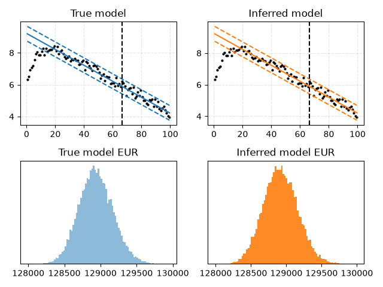

Note
Go to the end to download the full example code.
Uncertainty
Use the Well class to find parameters and estimate EUR.

Relative error in C: 0.033408
Relative error in k: 0.009390
Relative error in std: 0.010217
import matplotlib.pyplot as plt
import numpy as np
import pandas as pd
import scipy as sp
from dca.adca.well import Well
COLORS = list(plt.rcParams["axes.prop_cycle"].by_key()["color"])
def relative_error(x, x_hat):
return abs(x - x_hat) / abs(x)
# Set up the true model f(t) = exp(ln(C) - k * t + epsilon)
rng = np.random.default_rng(0)
n = 100 # Number of data points
C, k, std = 10_000, 0.05, 0.2 # Curve parameters
t = np.arange(n) + 0.5 # Same grid that Well uses internally
f = np.exp(np.log(C) - k * t) # True model
y = np.exp(np.log(C) - k * t + rng.normal(size=n, scale=std)) # Samples
y = y * sp.special.expit(t * 0.33 - 3) # Samples with ramp-up
# Set upper and lower uncertainty based on alpha
alpha = sp.stats.norm(scale=1).ppf(0.99)
SPLIT = 0.66
HALF_LIFE = 7 # Change this to see the effect
# Create a Well instance
time = pd.period_range(start="2020-01-01", periods=n, freq="D")
well = Well(id=1, time=time, production=y, curve_model="exponential")
split_idx = well.get_split_index(split=SPLIT)
# Create figure and plot the true model
fig, axes = plt.subplots(2, 2)
ax1, ax2, ax3, ax4 = axes.ravel()
ax1.set_title("True model")
ax1.scatter(t, np.log(y), label="Observations", color="black", s=4)
ax1.plot(t, np.log(f), label="True model", color=COLORS[0])
ax1.plot(t, (np.log(C) - k * t + alpha * std), color=COLORS[0], ls="--")
ax1.plot(t, (np.log(C) - k * t - alpha * std), color=COLORS[0], ls="--")
ax1.axvline(x=t[split_idx], color="black", ls="--")
ax1.grid(True, ls="--", alpha=0.33)
# Fit on first part of the data
well = well.fit(p=2.0, half_life=HALF_LIFE, prior_strength=1e-3, split=SPLIT)
# Get all inferred parameters and check that they are close to true parameters
C_hat, k_hat = well.curve_model(*well.curve_parameters_).original_parametrization()
std_hat = well.std_
print(f"Relative error in C: {relative_error(C, C_hat):.6f}")
print(f"Relative error in k: {relative_error(k, k_hat):.6f}")
print(f"Relative error in std: {relative_error(std, std_hat):.6f}")
# Plot the inferred model
ax2.set_title("Inferred model")
curve = well.curve_model(*well.curve_parameters_)
ax2.scatter(t, np.log(y), label="Observations", color="black", s=4)
ax2.plot(t, curve.eval_log(t), label="Inferred model", color=COLORS[1])
ax2.plot(t, curve.add(alpha * std_hat).eval_log(t), color=COLORS[1], ls="--")
ax2.plot(t, curve.add(-alpha * std_hat).eval_log(t), color=COLORS[1], ls="--")
ax2.axvline(x=t[split_idx], color="black", ls="--")
ax2.grid(True, ls="--", alpha=0.33)
# Compute EUR from true model: sum(y_obs) + simulate(f_future)
ax3.set_title("True model EUR")
n_sim = 25000
observed_prod = np.ones(n_sim) * np.sum(y[:split_idx])
epsilon = rng.normal(size=(n_sim, n - split_idx), scale=std)
sims = np.exp(np.log(C) - k * t[split_idx:] + epsilon)
EUR = observed_prod + np.sum(sims, axis=1)
ax3.hist(EUR, bins="auto", color=COLORS[0], alpha=0.5)
ax3.get_yaxis().set_visible(False)
# Compute EUR from inferred model: sum(y_obs) + simulate(f_future)
ax4.set_title("Inferred model EUR")
sims = well.simulate(x=t[split_idx:], seed=0, simulations=n_sim)
EURs = np.sum(y[:split_idx]) + np.sum(sims, axis=1)
ax4.hist(EURs, bins="auto", color=COLORS[1], alpha=0.9, density=True)
ax4.get_yaxis().set_visible(False)
fig.tight_layout()
plt.show()
Total running time of the script: (0 minutes 0.553 seconds)